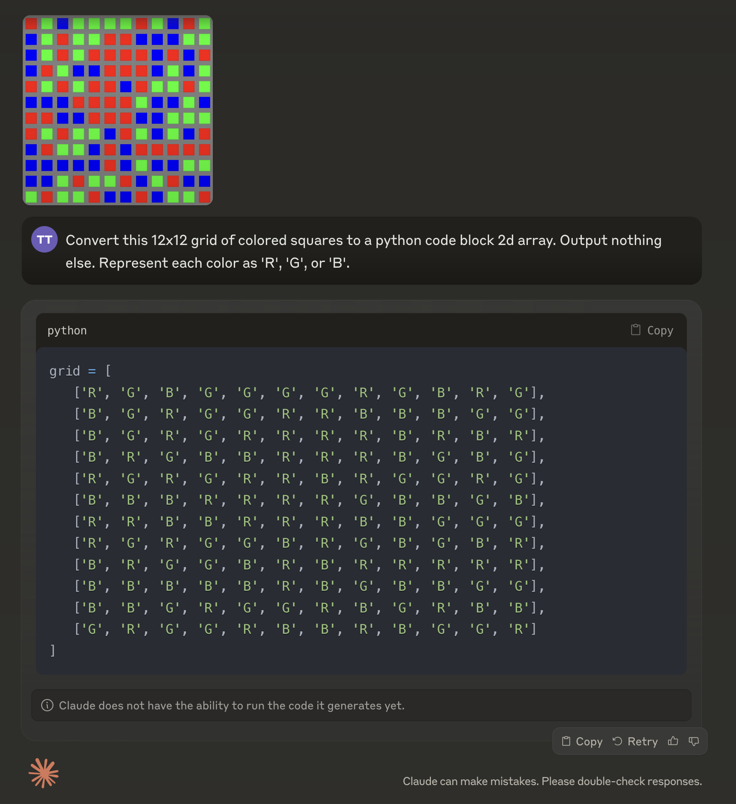
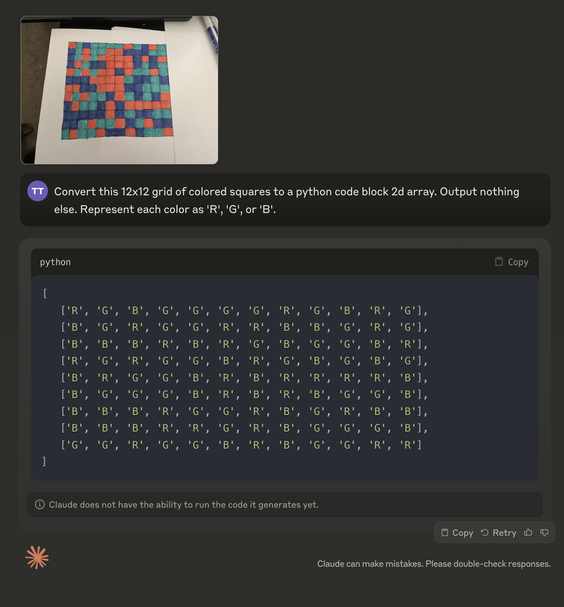

Sadly, photo realism—that is, photos of real objects instead of synthetic computer-generated drawings, don’t seem to improve multimodal capabilities.
Claude can see squares in a synthetically generated image:

But a hand drawing gives the wrong answer:

This may be because there are no borders between the squares. Claude really struggles with synthetic images without borders—just a grid of colors without space between.
I had hoped that it could get the hand drawing right, and this would enable it to do ARC-AGI because ARC requires seeing pixels together as a single shape.